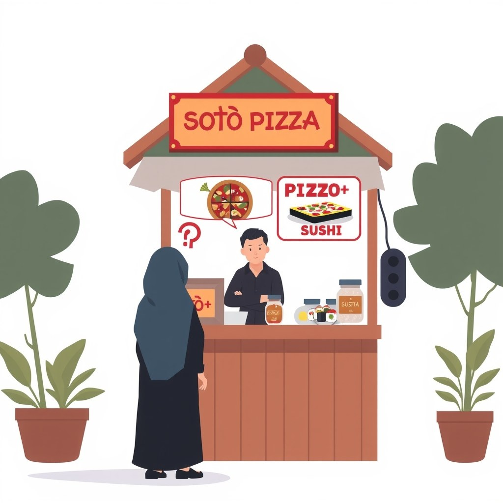

Banyak kreator konten pemula terjebak dalam lingkaran eksperimen tanpa akhir. Ketika satu video sepi, mereka langsung mengganti topik di video berikutnya. Hari Senin membahas tutorial bisnis, Selasa mengunggah klip komedi, Rabu pamer masakan, dan Kamis mencoba membahas berita teknologi terbaru. Harapannya sederhana: dari sekian banyak topik yang dilempar ke publik, pasti ada satu yang viral dan mendatangkan banyak pengikut.
Sayangnya, di platform media sosial berbasis rekomendasi seperti TikTok, Instagram Reels, maupun YouTube Shorts, strategi melempar jala lebar-lebar ini justru memicu masalah fatal. Dikutip dari unggahan praktisi pemasaran digital Parsaoran Saragih pada pertengahan Agustus 2026, fenomena views yang mentok di angka 100–300 bukan disebabkan oleh pembatasan akun (shadowban) atau algoritma yang membencimu. Masalah utamanya terletak pada sinyal data akun yang sangat kabur, sehingga sistem rekomendasi tidak tahu harus menyodorkan videomu kepada siapa.
Kenapa Algoritma Bingung Membaca Isi Akun Kita?
Untuk memahami kenapa views video sepi padahal konten ganti-ganti terus, kita harus membedah cara kerja sistem rekomendasi secara sederhana. Algoritma media sosial adalah mesin pencari jodoh otomatis antara konten dan penonton. Mesin ini tidak memiliki mata atau telinga seperti manusia; ia membaca data perilaku (interaction data) dari orang-orang yang menonton videomu.
Ketika kamu mengunggah video tentang resep makanan, algoritma akan menguji video tersebut ke kelompok kecil penonton yang biasanya menyukai konten kuliner. Jika mereka menonton sampai habis dan memberikan tanda suka, algoritma mencatat: "Akun A menghasilkan konten kuliner yang disukai kelompok X."
Namun, jika besoknya kamu mendadak mengunggah video tentang analisis saham, algoritma menyodorkan video baru itu ke kelompok penonton kuliner tadi. Hasilnya? Mereka langsung menggeser layar (swipe away) dalam waktu 1 detik karena tidak tertarik dengan saham. Algoritma menerima sinyal buruk tersebut dan menyimpulkan videomu tidak menarik, padahal masalah sebenarnya hanya terletak pada ketidakcocokan target audiens.
Ryan Holiday dalam bukunya Perennial Seller menekankan pentingnya memilih satu jalur khusus (picking a lane) dan menentukan siapa target audiens secara spesifik sejak awal. Tanpa kejelasan jalur, karya yang kamu buat akan mengambang dan gagal menemukan tempat di hati penonton setianya.
Dampak Ganti-Ganti Topik di Satu Akun bagi Perkembangan Views

Bayangkan kamu melihat warung makan di pinggir jalan yang memasang spanduk besar bertuliskan: "Menjual Soto Ayam, Pizza Italia, Sushi Jepang, dan Es Kelapa Muda." Saat kamu sedang lapar dan benar-benar ingin makan soto yang enak, apakah kamu akan memilih warung serba ada tersebut? Kebanyakan orang akan memilih lewat dan mencari warung yang memang khusus menjual soto, karena mereka percaya spesialisasi menjamin kualitas rasa.
Hal yang persis sama terjadi pada akun media sosialmu. Berikut adalah dampak nyata akibat kebiasaan berpindah topik di satu akun yang sama:
- Retensi penonton awal hancur: Penonton yang mengikuti akunmu dari konten komedi akan merasa tertipu saat beranda mereka diisi tutorial Excel. Mereka akan mengabaikan videomu, yang berakibat pada penurunan rasio tontonan (watch time).
- Algoritma tidak bisa mengelompokkan akunmu: Sistem gagal memasukkan akunmu ke dalam kategori (niche) tertentu. Akibatnya, setiap kali kamu merilis video baru, algoritma harus mulai meriset dari nol lagi.
- Pengikut lama menjadi pasif: Jumlah pengikutmu mungkin bertambah secara bertahap, tetapi mereka tidak pernah berinteraksi. Pengikut pasif ini justru merusak metrik akun saat video barumu diuji coba ke mereka terlebih dahulu.
Jonah Berger dalam risetnya yang dituangkan dalam buku Contagious: Why Things Catch On menjelaskan bahwa orang membagikan konten karena konten tersebut memiliki relevansi praktis dan emosional yang kuat dengan identitas kelompok mereka. Jika kontenmu terlalu luas dan berubah-ubah, tidak ada kelompok penonton yang merasa konten tersebut mewakili diri mereka.
Eksperimen ganti topik tidak sepenuhnya haram jika kamu berada di 10 video pertama saat baru membuat akun. Namun, jika kamu sudah memiliki lebih dari 30 video dan ingin membangun audiens yang loyal, melanjutkan kebiasaan ini hanya akan membuang energi tanpa hasil yang terukur.
Cara Melatih Ulang Algoritma Platform Langkah demi Langkah
Jika akunmu saat ini mengalami krisis views mentok di angka 200 akibat ganti-ganti topik, kamu tidak perlu terburu-buru menghapus akun dan membuat yang baru dari nol. Kamu bisa melatih ulang (re-train) sistem rekomendasi platform menggunakan urutan langkah berikut:
Tentukan Satu Topik Utama dan Kunci Fokusmu
Pilih satu bidang yang memenuhi tiga kriteria: kamu kuasai, kamu nikmati pembahasannya, dan memiliki kelompok penonton yang nyata. Jangan memilih topik yang terlalu luas seperti "gaya hidup", melainkan persempit menjadi spesifik, misalnya "tips produktivitas untuk pekerja kantoran di Jakarta".
Hentikan Total Mengunggah Konten di Luar Topik Utama
Komitmen penuh untuk tidak menyisipkan topik alternatif selama minimal 30 hingga 90 hari ke depan. Algoritma membutuhkan aliran data yang konsisten untuk menghapus catatan sinyal lama dan menggantinya dengan data perilaku dari target audiens yang baru.
Riset Kata Kunci dan Gunakan Entitas Relevan di Setiap Video
Bantu mesin mengenali isi kontenmu melalui teks. Masukkan kata kunci spesifik pada judul, teks di dalam video (in-video text), caption, serta percakapan lisanmu. Algoritma modern memanfaatkan pemrosesan bahasa alami (NLP) untuk menganalisis suara menjadi teks demi mengkategorikan videomu.
Bayangkan Satu Orang Penonton Nyata Saat Membuat Skrip
Daripada berusaha menyenangkan ratusan ribu orang yang abstrak, bayangkan satu teman atau kolega yang memang membutuhkan solusi dari topikmu. Buat pesan yang langsung menjawab masalah spesifik mereka dengan gaya bahasa pembicaraan sehari-hari.
Jika kamu juga ingin memahami langkah awal analisis metrik akun setelah merapikan fokus topik, kamu bisa membaca panduan tentang cara membaca pertumbuhan akun di katalog artikel BiB sebagai rujukan pendukung.
Contoh Nyata Perbaikan Akun dari Views Mentok 200 Jadi Stabil
Mari kita kaji contoh kasus hipotesis berdasarkan pola pemulihan akun yang sering ditemui di lapangan. Budi adalah seorang pembuat konten yang selama 2 bulan mengunggah topik campuran: game online, ulasan gadget, dan sesekali kuliner lokal. Views videonya selalu berhenti di kisaran 150 sampai 250 tontonan.
Setelah menyadari kesalahannya, Budi melakukan restrukturisasi akun dengan pola tindakan berikut:
| Fase Evaluasi | Tindakan yang Dilakukan Budi | Hasil Metrik pada Algoritma |
|---|---|---|
| Minggu 1–2 | Menghentikan konten game dan kuliner. Fokus 100% pada ulasan aplikasi produktivitas HP. | Views masih mentok di angka 200, tetapi rasio selesai menonton (completion rate) mulai naik dari 10% menjadi 25%. |
| Minggu 3–4 | Konsisten merilis 4 video seminggu dengan struktur hook yang seragam dan pembahasan aplikasi secara spesifik. | Video mulai disodorkan ke tab rekomendasi pengguna yang menyukai aplikasi produktivitas. Views rata-rata naik ke 800–1.200 per video. |
| Bulan 2 | Melanjutkan disiplin pada satu topik tanpa tergiur tren di luar niche. | Algoritma berhasil mengunci kategori akun Budi. Salah satu videonya menembus 25.000 views karena disebarkan ke audiens yang tepat. |
Kasus di atas membuktikan bahwa perbaikan tidak terjadi secara mendadak dalam semalam. Algoritma membutuhkan masa pengujian berulang untuk memastikan bahwa perubahan fokus akunmu bersifat permanen, bukan sekadar kebetulan.
Bagi kamu yang mengelola akun klip video pendek, menerapkan spesialisasi target audiens ini juga merupakan fondasi utama saat mempraktikkan cara menambah followers dengan target audiens yang tepat agar interaksi akun tetap organik.
Kesalahan Umum Saat Mencoba Memperbaiki Akun Sepi Penonton
Banyak kreator yang sudah berniat merapikan akun justru gugur di tengah jalan karena terjebak pada kesalahan-kesalahan kaprah berikut:
- Mudah tergiur musik atau audio yang sedang viral: Memakai audio populer boleh-boleh saja, tetapi memaksakan membuat konten joget atau komedi yang tidak ada hubungannya dengan nichenya hanya demi audio viral akan merusak kembali sinyal algoritma yang baru dirintis.
- Menghapus massal video lama yang sepi: Menghapus belasan video sekaligus dalam kurun waktu singkat dapat memicu kecurigaan sistem keamanan platform. Cukup biarkan video lama atau ubah pengaturannya menjadi pribadi (private) secara bertahap.
- Gagal menahan diri dari eksperimen acak: Baru konsisten selama 5 hari, mereka sudah hilang kesabaran karena views belum naik tajam, lalu kembali mengunggah topik acak yang merusak fokus akun.
- Menyalahkan algoritma tanpa mengevaluasi kualitas hook: Meskipun topik sudah fokus, video tetap membutuhkan kalimat pembuka yang kuat di 3 detik pertama agar penonton mau berhenti menggeser layar.
Cara Mengecek Apakah Kamu Sudah Paham Pola Pemulihan Akun
Untuk memastikan kamu tidak sekadar membaca artikel ini tetapi benar-benar memahami pola kerjanya, coba jawab tiga pertanyaan penguji berikut dengan bahasamu sendiri:
- Kenapa video yang membahas topik acak membuat angka tontonan mentok di 100–300 views? (Jawabanmu harus memuat alasan mengenai ketidakcocokan target pengujian awal algoritma).
- Apa tindakan pertama yang harus dilakukan ketika ingin melatih ulang sinyal algoritma pada akun lama? (Jawabanmu harus menyebutkan penghentian total unggahan di luar topik utama).
- Mengapa memilih topik yang sempit justru lebih mudah mendatangkan penonton setia dibanding topik luas? (Jawabanmu harus menguraikan relevansi konten terhadap kebutuhan spesifik suatu kelompok).
Sistem rekomendasi selalu bekerja secara logis berbasis data interaksi. Begitu kamu berhenti melempar konten acak dan mulai konsisten melayani satu kelompok penonton ideal, algoritma akan secara otomatis menjadi mitra terbaik dalam menyebarkan karyamu ke audiens yang lebih luas. Langkah pertama hari ini sangat sederhana: pilih satu topik utama, buat daftar 10 ide skrip yang relevan, dan jangan pernah berpaling ke topik lain dalam 90 hari ke depan.
Sumber
- Kenapa Views Mentok 200-300 Terus — Facebook · 16 Agu 2026